- September 17, 2018 time パッケージの使い方
- September 1, 2018 stack でアプリケーションのバックトレースを取得する (デバッグ)
- August 31, 2018 stack-1.11 から location に extra-dep を指定できなくなります。
- August 26, 2018 RecordWildCards と Reader モナド
- August 21, 2018 path ＆ path-io パッケージ
-
August 12, 2018
二分木の操作 (Haskell Quiz No.16)
二分木の操作 (Haskell Quiz No.16)
Haskell Quiz No.16
難易度: λλ
以下のような二分木の定義があります。
以下の操作を定義してみましょう！
(1) 部分木を左右反転させた木を返す関数
 → 
→ 左の木に mirror 関数を適用すると、右の木を返します。
(2) 木の高さを計算する関数
depth 関数で上記の木の高さを計算すると 3 になります。
(3) 木が平衡かチェックする関数
- 平衡の定義: 左右の部分木の高さが高々1しか違わない
上記の木は 平衡 です。
さらに Functor と Foldable のインスタンスを定義してみましょう！(ここでは fmap と foldMap を定義することにします。)
instance Functor a where fmap :: (a -> b) -> Tree a -> Tree b fmap = undefined instance Foldable a where foldMap :: Monoid m => (a -> m) -> Tree a -> m foldMap = undefined答えは次回。
※ 図の作成には mermaidというツールを使っています。
参考
- Programming in Haskell (14.2 Foldables and friends)
- 関数プログラミング入門 Haskell で学ぶ原理と技法 (8.3.2 木による表現)
- CIS 623
bigmoon, quiz - August 7, 2018 (^>>) と (>>^)
- July 31, 2018 Yesod には脆弱性があるのかな？
-
July 24, 2018
二分木 (Haskell Quiz No.15)
二分木 (Haskell Quiz No.15)
Haskell Quiz No.15
難易度: λ
葉にだけ値を持つような二分木を定義してみてください！
図で書くとこんな感じです。

答えは次回。
この図は mermaid というツールを使って書きました。
bigmoon, quiz - July 21, 2018 Circle CI 2.0 の設定
- July 16, 2018 Haskell Quiz No.14 shift-jis ファイルの読み込み
- July 11, 2018 Haskell Quiz No.13 Conduit Part.8
- July 10, 2018 Haskell Quiz No.12 Conduit Part.7
- July 9, 2018 Haskell Quiz No.11 isUpper と isAsciiUpper
- July 8, 2018 Haskell Quiz No.10 Conduit Part.6
- July 6, 2018 Haskell Quiz No.9 Conduit Part.5
- June 27, 2018 namespaced templates
- June 26, 2018 ContT を使ってコードを綺麗にしよう！
- June 25, 2018 stack run コマンド
- June 25, 2018 正格性のすべて (翻訳)
- May 23, 2018 Prelude を カスタムPrelude で置き換える
- May 14, 2018 extensible-0.4.9 がリリースされました。
- May 4, 2018 Stack 1.7.1 がリリースされました。
- April 18, 2018 HIE でコード整形時に改行が追加されてしまうバグが直りました
- April 14, 2018 LiquidHaskell の --prune-unsorted フラグ
- April 8, 2018 Haskell Quiz No.8 Conduit Part.4
- April 7, 2018 Haskell Quiz No.7 Conduit Part.3
- April 6, 2018 Haskell Quiz No.6 Conduit Part.2
- March 31, 2018 Haskell Quiz No.5 Conduit Part.1
- March 30, 2018 prettyprinter パッケージ
- March 28, 2018 Haskell Quiz No.4 幅優先探索と深さ優先探索
- March 27, 2018 Haskell Quiz No.3 QuickCheck の Arbitrary 型クラス
- March 26, 2018 Haskell IDE Engine を Emacs で使う
- March 25, 2018 Haskell Quiz No.2 foldl と foldr
- March 24, 2018 Haskell Quiz はじめました。 No.1 type, newtype, data
- March 20, 2018 アプリケーションのバージョンに Git の情報を出してみよう！
- March 19, 2018 Yesod v1.6 のサブサイト
- March 13, 2018 extra-deps に github の短縮形が指定できるようになります
- March 7, 2018 wizard モノイド (翻訳)
- March 3, 2018 Liquid Haskell のインストールと学習方法
- March 1, 2018 Liquid Haskell
- February 26, 2018 debug パッケージのアナウンス (翻訳)
- February 25, 2018 SLURP (翻訳)
- February 23, 2018 stack でどうしてもビルドできないとき
- February 21, 2018 stack 1.6.5 がリリースされました。
- February 12, 2018 Pattern Synonyms で DEPRECATED
- January 29, 2018 素晴らしき HLint を使いこなす
- January 27, 2018 Yesod の破壊的変更予定
- January 6, 2018 最近遭遇した stack build 時の ld (pthread, -fPIC) エラー
- December 31, 2017 travis-ci の初回ビルドで OUT OF MEMORY が出た時の対処法
- December 29, 2017 Literate Markdown (markdown-unlit の使い方) について
-
December 27, 2017
haddock に Grid Table 記法が追加されました
haddock に Grid Table 記法が追加されました

Grid Table 記法の紹介 bigmoon, haddock - December 27, 2017 Haskell のパフォーマンスをデバッグする (翻訳)
- December 24, 2017 stack v1.6.3 がリリースされました。
- December 24, 2017 VS Code で Ghcid を使う
- December 23, 2017 カスタムスナップショットの紹介
- December 22, 2017 将来も使えるテストスイート (翻訳)
- December 20, 2017 stack ls コマンドが追加されます
- September 18, 2017 Haskell で暗号学的ハッシュを扱う (翻訳)